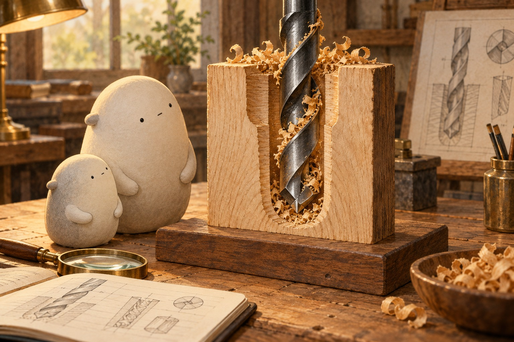
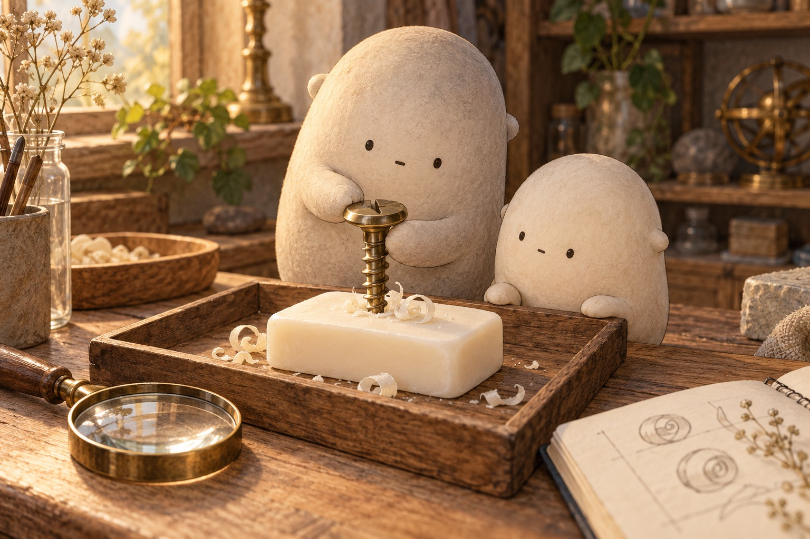
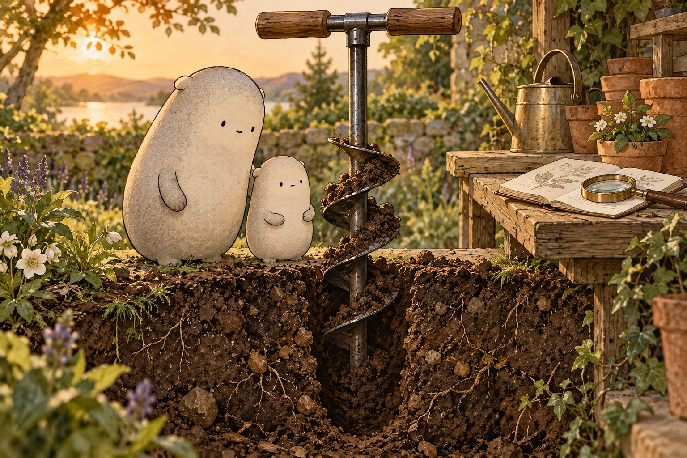
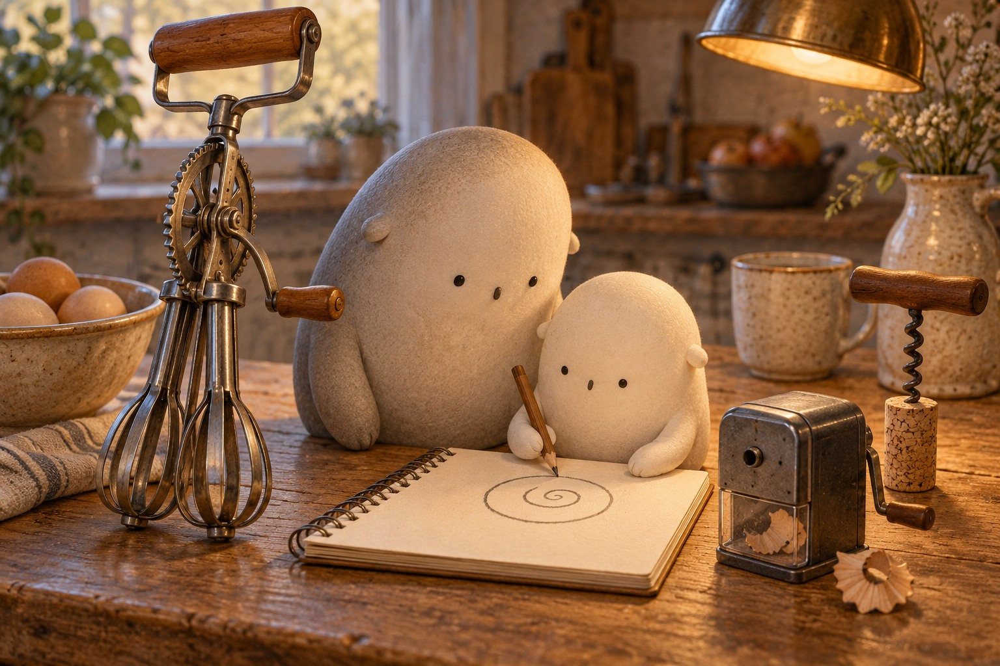

A twist drill bit is a metal rod with spiral grooves. As it turns and moves into the material, the cutting lips at its tip shave off tiny bits called chips.
Try this. Trace the tip in the picture, then follow one spiral groove.

Flutes carry chips up and out of the hole.
Where do the chips go?
Follow the chips from the bottom of the hole to the top.
A little explanation & something to try
The spiral grooves are called flutes. They help carry chips up and out as the bit turns, keeping the hole clear. The cutting lips make chips; the flutes give them a way out.
Try this. Use the diorama to follow one chip up the flute.

A screw thread helps a turning screw move into the soap.
What can we notice by turning slowly?
Look for a curl beside the screw thread.
A little explanation & something to try
A screw has a spiral ridge called a thread. It acts like a ramp wrapped around the rod. Turning against the material helps the screw move in. A screw thread is a raised ridge; a drill flute is a groove.
Try this. With Big close by, hand-turn a screw slowly into soap or clay on a tray and look at the curls. Power drills are tools for adults; kids do not use them. Big stays close. Try turning a pencil in an enclosed hand sharpener, too.
An Archimedes screw lifts water to a higher place.
What else can a turning spiral move?
Water rides from a low bowl to a higher cup.
A little explanation & something to try
An auger lifts loose soil or ice from a hole. An Archimedes screw lifts pockets of water along a sloping tube. A spiral slopes along its length, so turning against material can push or carry that material along. It needs something to work against, not just empty space.
Try this. Wrap a ribbon around a pencil and follow its sloping path with your eyes.
Follow the spiral
How Drill Bits Work
A spiral to follow
Little Wonderer leaned toward the magnifier. A drill bit rested on the bench. This metal rod had a spiral shape that wound around and along it. “Why all the twists?” Little asked. Big pointed to the tip. Its cutting lips are edges that shave off tiny bits of material as the bit turns.
How does the tip’s job differ from the spiral’s job?
A thread in the soap
Big slowly turned a screw into a bar of soap by hand. Little watched a pale curl gather beside it. A screw thread is a spiral ridge around a screw. As it turns against the material, the sloping thread helps pull the screw farther in. Turning can make something move along, too.
How could a sloping thread help a screw move in?
A way out for chips
Their cutaway display showed inside a hole. The drill bit’s sharp tip and cutting lips made small shavings called chips. Its spiral grooves, called flutes, gave those chips a path up and out as the bit turned. “Like a spiral slide going up!” said Little. The hole needed room for the next chips.
Why does the hole need a path for chips to leave?

A spiral in the soil
At the garden bench, Big showed Little an auger. An auger is a tool with a broad spiral for making holes in soil or ice. Its lower edge loosens material. Turning lifts the loose bits along the spiral. Little traced the path in the notebook: around, up, and out of the hole.
What do a drill bit and an auger both move out?
Water takes a ride
Back at the table, a sloping tube joined a low bowl to a high cup. Inside was an Archimedes screw, a large spiral that can lift water. Big turned its handle. Pockets of water rode up between the spiral and the tube. Little watched water reach the cup above the bowl.
How does turning help water reach a higher cup?

What else can turn?
Little found more turning tools. A corkscrew spirals into a cork to pull it out. Egg-beater gears make a hand-crank spin the beaters faster. A hand sharpener shaves pencil curls. Little drew a spiral. “Why does a spiral move things when it spins?”
Which tools move material along, and which mainly spin it?